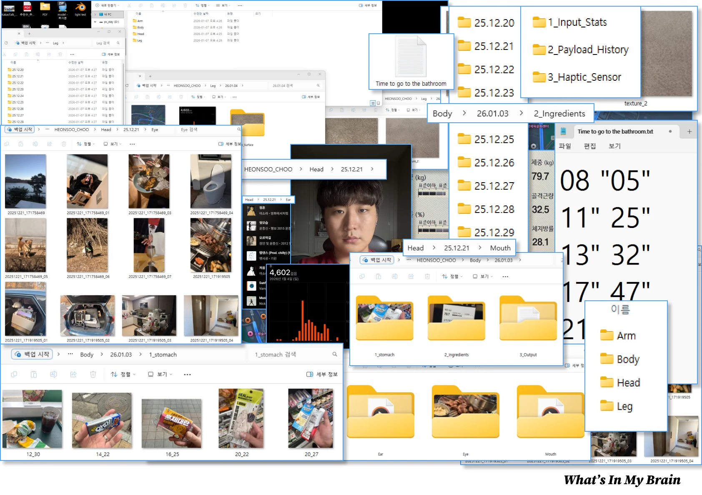
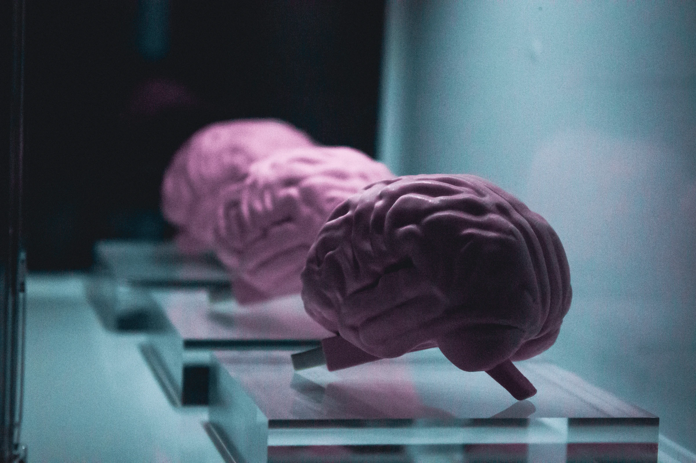
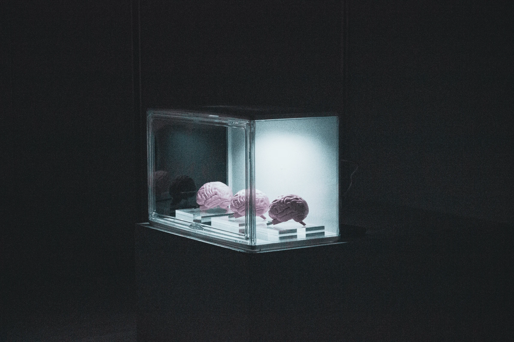
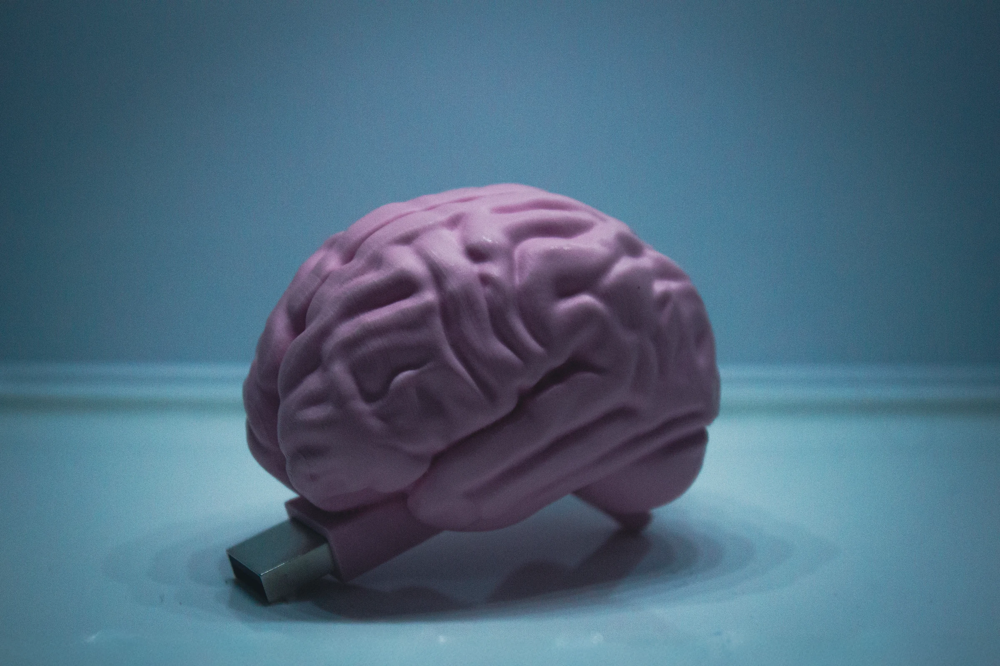
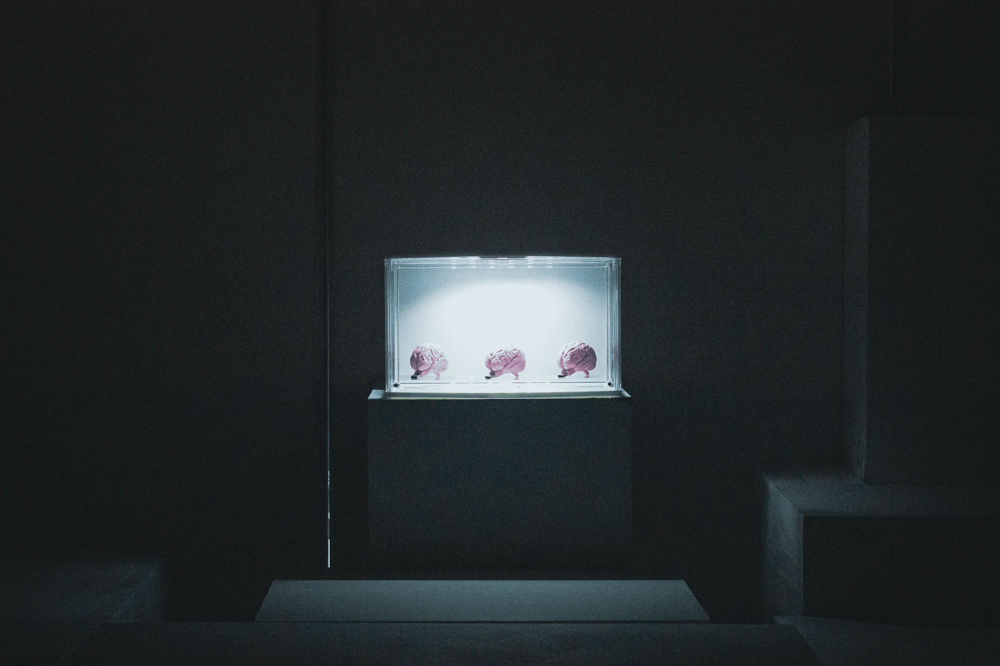
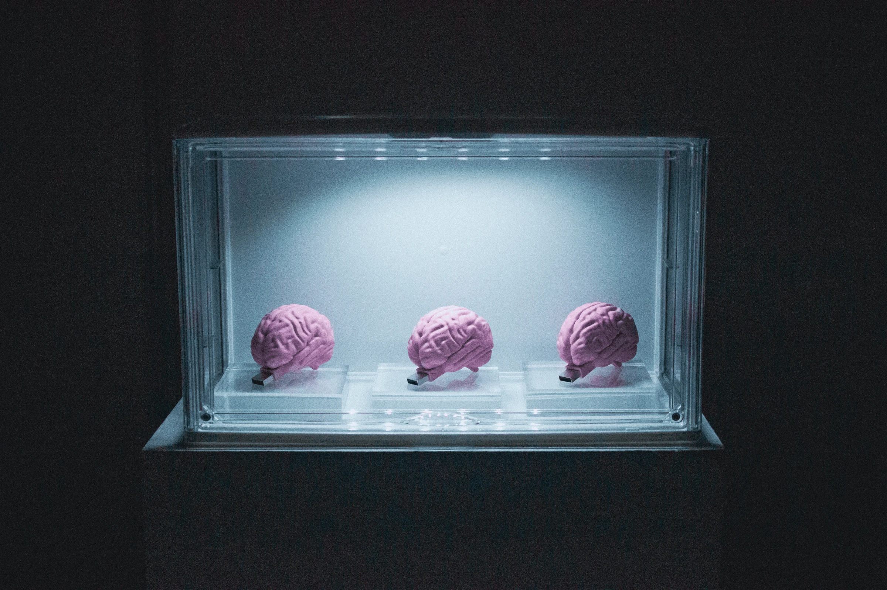
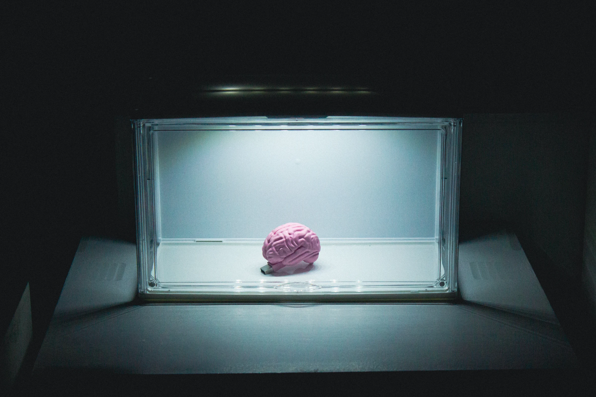

-BRAIN-
영원히 사라지지 않을 나를 위하여
/
For the Version of Me That Never Die
2026 /
Object / Installation, Photography
육체는 유한하고 언젠가 소멸하지만,
내가 먹고, 듣고, 생각한 데이터는 영원히 남을 수 있지 않을까 하는 질문에서 이 작업은 시작되었습니다.
저는 뇌 모양의 USB에 저의 모든 일상을 백업하기 시작했습니다.
이는 단순한 저장 장치를 넘어, 언젠가 저의 육체가 사라졌을 때 이 세상에 남겨질 '디지털 영혼'을 구축하는 과정입니다.
이 기계 속의 뇌가 나보다 더 온전한 내가 될 미래를 상상하며, 저는 오늘도 소멸하지 않는 존재를 위한 업로드를 계속합니다.
If I cannot live forever as a biological being, can I remain as digital data?
This project started with the simple act of backing up files, leading me to upload my entire life—thoughts, meals, and movements—into a brain-shaped USB.
This device is not just storage; it is a "digital backup of my soul" intended to persist long after my physical death.
As I continue this daily ritual, I contemplate a future where this digital brain becomes a more complete version of "me" than my own flesh and blood.







←